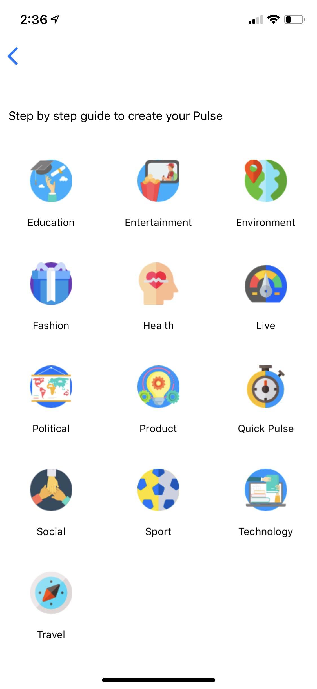
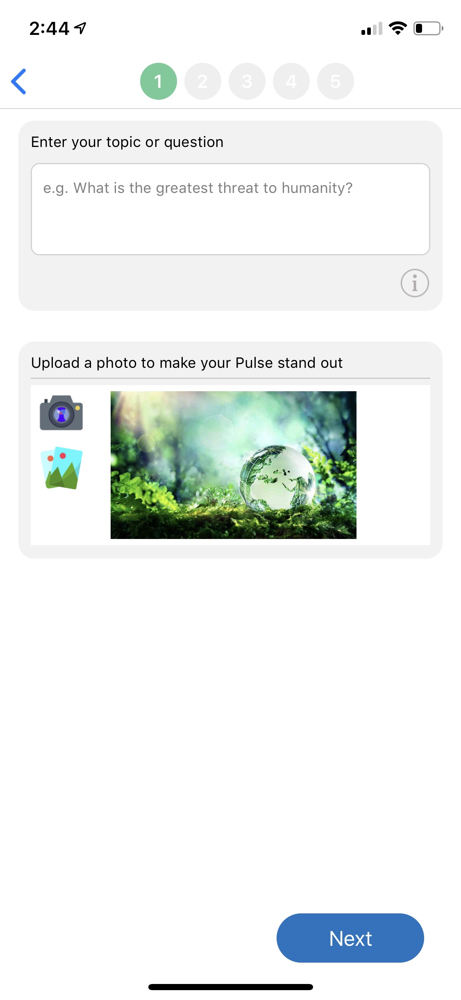
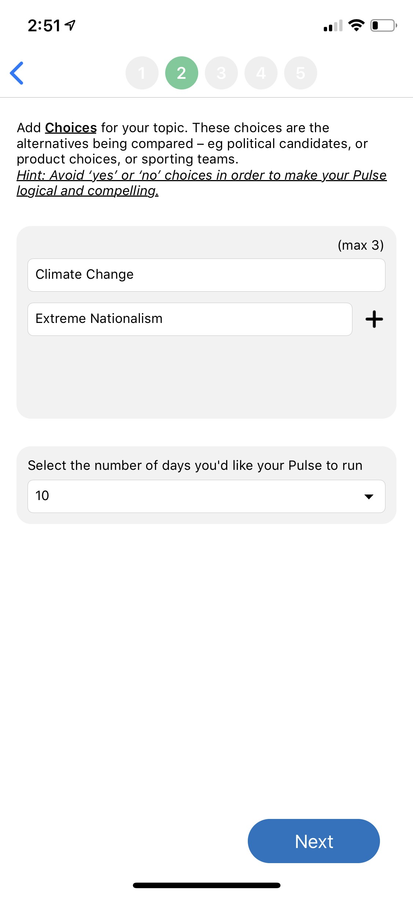
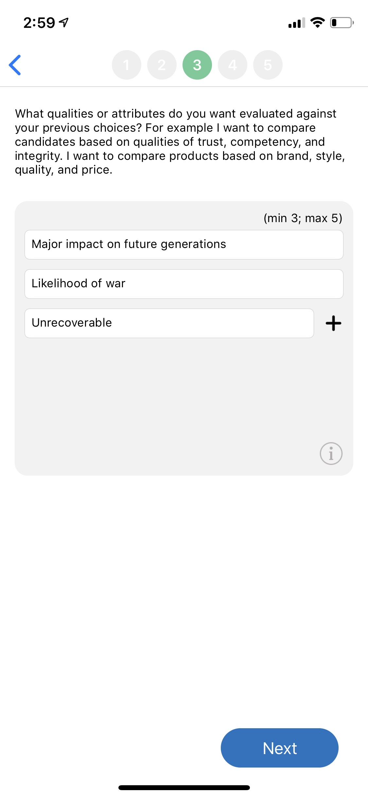
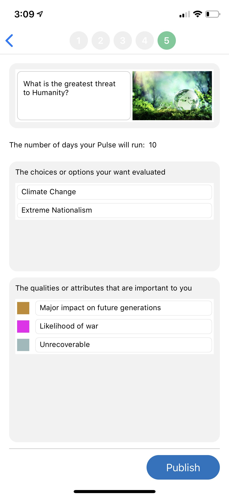

What is my question or topic?
First,select the symbol form the Home screen.
Then select your Pulse topic category


Who/What are my choices

The best topics are those that engage your audience with clear distinct choices.Avoid questions that will likely create 'yes' or 'no' type responses

Why would i select a choice?
How Important is each thing to me?
For the best results,your qualities should be either all positive traits or all negative traits.For example, if you are ranking attributes against political candidates,it would be clearer to have attributes such as [Trust, Competency,Integrity] as opposed to a mix of attributes such as [Trustworthy,Immoral,Competency,Sexist]

You are now ready to do a final review of Pulse and Publish
